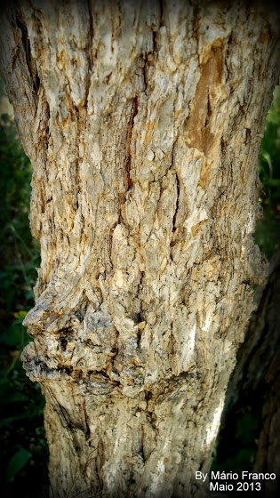
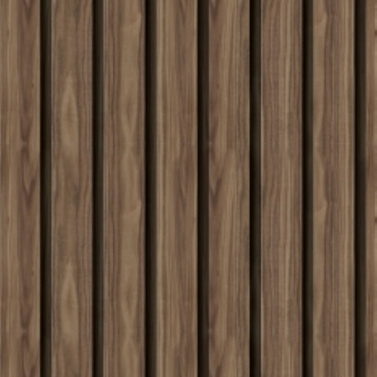

HOGWARTS WORLD
Bem vindo, Bruxo (nome da pessoa)
Saiba mais sobre sua casa!
SONSERINA
Você é da Sonserina
saiba mais sobre ela.

Sonserina
A história da Casa da Sonserina remonta aos primórdios da Escola de Magia e Bruxaria de Hogwarts, localizada na Escócia. A casa foi fundada por Salazar Sonserina, um dos quatro fundadores de Hogwarts, juntamente com Godric Gryffindor, Helga Hufflepuff e Rowena Ravenclaw. Salazar Sonserina tinha uma visão particular sobre a seleção dos alunos de Hogwarts. Ele acreditava que apenas aqueles de linhagem pura deveriam ter a oportunidade de estudar na escola de magia. No entanto, os outros fundadores discordavam dele, acreditando na igualdade de oportunidades para todos os bruxos e bruxas, independentemente de sua origem. Como resultado, Salazar Sonserina decidiu fundar sua própria casa em Hogwarts, com critérios de seleção baseados em suas próprias crenças. Ele valorizava a astúcia, a ambição e o sangue puro como qualidades importantes em seus alunos. Assim, a Casa da Sonserina foi estabelecida como uma das quatro casas da escola. A Casa da Sonserina se tornou conhecida por sua reputação de abrigar bruxos e bruxas ambiciosos, determinados a alcançar o sucesso a qualquer custo. Ao longo dos séculos, a casa produziu muitos bruxos notáveis, incluindo Tom Riddle, mais conhecido como Lord Voldemort, um dos bruxos das trevas mais poderosos e temidos da história da magia. A casa é representada por uma cobra verde e prata em seu brasão e suas cores são verde e prata. A sala comunal da Sonserina está localizada nas masmorras de Hogwarts e é acessada por meio de uma entrada escondida por uma parede de pedra no corredor das masmorras. Embora a Casa da Sonserina tenha sido frequentemente associada à ambição e à astúcia, nem todos os seus alunos são necessariamente malignos. Muitos bruxos e bruxas da Sonserina mostraram qualidades positivas e foram capazes de usar sua determinação e sagacidade para alcançar grandes feitos. No entanto, a casa ainda carrega certa estigma e controvérsia devido às ações de seus membros mais infames ao longo da história.
Personagens Principais da Sonserina
Lord Voldemort
Lord Voldemort, cujo nome verdadeiro é Tom Marvolo Riddle, é o principal antagonista na série de livros e filmes de Harry Potter, escrita por J.K. Rowling. Ele é retratado como um bruxo das trevas extremamente poderoso e cruel, cujo objetivo é governar o mundo mágico e subjugar os bruxos nascidos trouxas. Voldemort é conhecido por sua aparência assustadora, com pele pálida e sem cabelos, olhos vermelhos e nariz achatado. Sua história remonta aos tempos de Hogwarts, onde ele estudou como um aluno talentoso e ambicioso. Ele se destacou em várias áreas da magia, mas sua busca por poder e imortalidade o levou a mergulhar nas artes das trevas e a cometer atos terríveis. Uma das características mais marcantes de Voldemort é sua capacidade de manipulação e persuasão. Ele é um mestre em usar as fraquezas e os medos das pessoas para recrutá-las para o seu lado e ganhar seguidores leais, conhecidos como Comensais da Morte. Seus seguidores o temem e o idolatram, e estão dispostos a realizar suas ordens mais cruéis. Uma das habilidades mais temidas de Voldemort é a magia das Horcruxes. Ele divide sua alma em várias partes e as esconde em objetos especiais, tornando-se virtualmente imortal. Para destruí-lo completamente, é necessário encontrar e destruir todas as Horcruxes. Voldemort é um adversário formidável em duelos de magia, possuindo um vasto conhecimento das artes das trevas e realizando feitiços poderosos. Ele é conhecido por sua crueldade e falta de compaixão, eliminando qualquer um que se oponha a ele sem hesitar. Além de suas habilidades mágicas, Voldemort é caracterizado por sua obsessão com a pureza do sangue. Ele acredita na superioridade dos bruxos puro-sangue e busca eliminar todos os nascidos trouxas e bruxos de sangue impuro. Essa visão preconceituosa e sua busca por poder absoluto o tornam um vilão ameaçador e odioso. Ao longo da série, Harry Potter se torna o principal oponente de Voldemort. A luta entre os dois bruxos é o ponto central da história, com Harry representando os valores opostos de amor, amizade e coragem. A batalha final entre Harry e Voldemort é um momento épico, no qual o bem triunfa sobre o mal. Voldemort é um dos vilões mais icônicos da literatura e do cinema. Sua presença sombria e sua natureza cruel e ambiciosa cativaram os fãs de Harry Potter ao redor do mundo. Ele personifica o perigo e a ameaça que precisam ser superados para preservar a paz e a harmonia no mundo mágico.
Severus Snape
Severus Snape é um personagem icônico da série de livros e filmes de Harry Potter, criada por J.K. Rowling. Ele é um professor de Poções e mais tarde de Defesa Contra as Artes das Trevas em Hogwarts, a escola de magia e bruxaria. A primeira impressão que temos de Snape é a de um professor austero e intimidador, com suas vestes negras, cabelos negros e olhos escuros e penetrantes. Ele é descrito como tendo um temperamento difícil e um jeito sarcástico de se expressar. Sua aparência e atitudes geram desconfiança e antipatia por parte dos alunos, especialmente Harry Potter e seus amigos. Ao longo da história, Snape é retratado como um personagem ambíguo, cheio de mistérios e segredos. Ele desempenha um papel complexo e crucial na trama, e sua lealdade é constantemente questionada. No início, Snape parece ser um aliado de Voldemort e um antagonista para Harry, mas revelações surpreendentes revelam sua verdadeira natureza e motivos. A verdadeira identidade de Snape como um agente duplo e espião para a Ordem da Fênix é revelada. Ele faz parte de uma longa e elaborada trama para proteger Harry Potter e ajudar a derrotar Voldemort. Snape tem um passado complicado e doloroso, que envolve sua relação com os pais de Harry, Lílian e Tiago Potter, e seu amor não correspondido por Lílian. Um dos aspectos mais marcantes de Snape é sua profunda paixão e amor por Lílian Evans, que molda suas ações e motivações ao longo da história. Sua devoção por ela é evidente mesmo anos após sua morte, e Snape está disposto a fazer qualquer coisa para proteger a memória dela e cumprir sua promessa de proteger Harry. A interpretação de Alan Rickman como Severus Snape nos filmes contribuiu para a popularidade e impacto do personagem. Sua performance traz uma mistura única de amargura, mistério e vulnerabilidade, tornando Snape um dos personagens mais fascinantes e amados da série. No final, descobrimos que Snape tem sido um herói oculto, que arriscou sua vida e suportou grandes sacrifícios por trás dos panos, tudo em nome do amor e da redenção. Sua história é uma prova poderosa de como a redenção pode surgir mesmo dos personagens mais complexos e aparentemente sombrios. Severus Snape é um personagem cativante e multifacetado, cuja trajetória nos ensina sobre a importância do amor, sacrifício e segundas chances. Sua história evoca emoções intensas e destaca a capacidade de um indivíduo de se transformar e lutar pelo bem, mesmo diante de grandes adversidades.

Bellatrix Lestrange
Bellatrix Lestrange é um dos personagens mais notórios da série de livros e filmes de Harry Potter, criada por J.K. Rowling. Ela é uma bruxa das trevas extremamente leal a Lord Voldemort e uma das principais seguidoras do Lorde das Trevas. Bellatrix é descrita como uma mulher de aparência austera e sinistra, com longos cabelos negros e olhos brilhantes e fanáticos. Ela é conhecida por seu comportamento impetuoso e violento, além de sua lealdade inabalável a Voldemort. Bellatrix está disposta a fazer qualquer coisa para servir seu mestre e participar de suas terríveis ambições. Sua habilidade mágica é excepcional e ela é uma duelista formidável. Bellatrix é adepta de magia das trevas e é habilidosa em feitiços e maldições poderosas, incluindo a Maldição Cruciatus, que causa intensa dor em suas vítimas. Ela é uma bruxa perigosa e temida por muitos. Bellatrix é também conhecida por sua personalidade fanática e obsessiva. Ela idolatra Voldemort e o vê como um líder supremo, dedicando-se completamente à sua causa e às suas crenças extremistas. Sua devoção a Voldemort é tão intensa que ela está disposta a sacrificar sua própria vida por ele. A personagem de Bellatrix Lestrange é retratada como uma figura sombria e perturbadora, trazendo um senso de perigo e crueldade para a história. Sua presença é marcante e suas ações têm um impacto significativo em vários momentos da trama, trazendo angústia e desafios para os protagonistas. A interpretação de Helena Bonham Carter como Bellatrix nos filmes é notável, capturando perfeitamente a loucura e a intensidade da personagem. Sua performance traz à vida a natureza maníaca e imprevisível de Bellatrix, tornando-a um dos personagens mais memoráveis da série. Bellatrix Lestrange é uma vilã complexa e fascinante, cuja devoção cega e crueldade implacável a tornam uma antagonista formidável. Sua presença na série Harry Potter destaca a presença do mal e a luta entre o bem e o mal, bem como a devoção cega e os perigos do fanatismo. Sua relação com outros personagens, como seu envolvimento com a família Black e sua rivalidade com Nymphadora Tonks, acrescentam camadas adicionais à sua personalidade e história. Bellatrix representa o lado mais obscuro da magia e a capacidade do ser humano de se entregar

Lucius Malfoy
Lucius Malfoy é um personagem importante na série de livros e filmes de Harry Potter, escrita por J.K. Rowling. Ele é um bruxo das trevas, um membro proeminente da família Malfoy e um seguidor leal de Lord Voldemort. Lucius é conhecido por sua aparência elegante e aristocrática, sempre vestindo trajes de alta qualidade e portando uma bengala de prata com uma cabeça de cobra. Ele é descrito como tendo cabelos loiros platinados e olhos frios e cinzentos. Lucius Malfoy é caracterizado por sua crença na pureza do sangue e no elitismo bruxo. Ele é um fervoroso defensor dos ideais de sangue puro e tem desprezo pelos bruxos nascidos trouxas e pelos bruxos de sangue impuro. Ele exerce uma influência considerável na comunidade bruxa, usando sua riqueza e influência para ganhar poder e manipular os eventos de acordo com seus interesses. Como seguidor de Voldemort, Lucius desempenha um papel ativo na luta contra Harry Potter e seus aliados. Ele é um Comensal da Morte, um grupo de bruxos das trevas leais a Voldemort, e participa de várias atividades malignas, incluindo a tentativa de assassinar Dumbledore e a batalha no Departamento de Mistérios. Lucius é um duelistas habilidoso e demonstra um conhecimento profundo das artes das trevas. Ele usa sua astúcia e inteligência para manipular situações em seu benefício e para proteger sua família. Ele é um estrategista calculista e muitas vezes age com crueldade para alcançar seus objetivos. No entanto, ao longo da história, Lucius Malfoy passa por uma jornada de redenção e transformação. Ele é forçado a confrontar as consequências de suas ações e a questionar suas lealdades. Sua família é ameaçada e ele é obrigado a tomar decisões difíceis que desafiam suas convicções. No final, Lucius se afasta da causa de Voldemort e se une aos esforços de combate ao mal. Ele mostra um lado mais humano e preocupado com o bem-estar de sua família. Embora seus atos passados não possam ser esquecidos, ele busca redenção e tenta reparar o dano que causou. Lucius Malfoy é um personagem complexo, com camadas de personalidade e motivações. Sua trajetória na série de Harry Potter é marcada por sua lealdade inicial a Voldemort, sua participação nas atividades malignas e sua eventual transformação em busca de redenção. Ele representa a capacidade de mudança e de tomar uma posição contra o mal, mesmo quando isso significa desafiar suas crenças arraigadas.
Draco Malfoy
Draco Malfoy é um personagem central na série de livros e filmes de Harry Potter, escrita por J.K. Rowling. Ele é um estudante da casa Sonserina em Hogwarts e filho único da família Malfoy, uma das famílias bruxas mais influentes e ricas do mundo mágico. Draco é conhecido por seu comportamento arrogante, altivo e provocador. Ele é descrito como tendo cabelos loiros platinados, olhos cinzentos e um rosto pálido. Desde o início da história, ele se mostra hostil em relação a Harry Potter e seus amigos, muitas vezes fazendo comentários maldosos e tentando prejudicá-los. Draco é influenciado pelas crenças e valores de sua família, que é conhecida por sua crença na pureza do sangue e seu apoio a Voldemort e aos ideais das trevas. Ele cresceu em um ambiente onde a superioridade dos bruxos de sangue puro era enfatizada, o que moldou sua visão de mundo e seu comportamento. Ao longo da série, Draco é colocado em situações difíceis e confrontado com escolhas morais. Ele é forçado a se juntar às fileiras dos Comensais da Morte, os seguidores de Voldemort, mas também demonstra sinais de dúvida e medo em relação às consequências de suas ações. Embora Draco inicialmente pareça ser um antagonista implacável, sua personalidade é aprofundada à medida que a história avança. Ele lida com o peso das expectativas de sua família e as pressões de seu papel no mundo bruxo. Eventualmente, suas ações revelam um lado mais humano e vulnerável, mostrando que ele não é apenas um vilão unidimensional. É revelado que Draco enfrenta conflitos internos e que suas ações nem sempre são motivadas pelo ódio ou maldade. Ele é influenciado por seu desejo de agradar sua família e evitar retaliações, mas também expressa inseguranças e incertezas sobre o caminho que está seguindo. No final da história, Draco é confrontado com uma oportunidade de redenção e demonstra sinais de arrependimento e mudança. Ele toma uma decisão crucial que vai contra as expectativas de sua família, mostrando uma evolução em sua personalidade e suas convicções. Draco Malfoy é um personagem complexo que retrata os desafios de crescer em um ambiente cheio de preconceitos e pressões familiares. Sua jornada na série de Harry Potter é marcada por sua luta interna, suas tentativas de se encaixar nas expectativas de sua família e suas escolhas morais. Ele ilustra a capacidade de transformação e a importância de questionar e desafiar as crenças impostas, mesmo em circunstâncias difíceis.

Narcisa Malfoy
Narcisa Malfoy, cujo nome de solteira é Black, é um personagem da série Harry Potter criada por J.K. Rowling. Ela é a esposa de Lucius Malfoy e mãe de Draco Malfoy. Narcisa é membro da influente e prestigiosa família Black, conhecida por suas conexões com as trevas e seu orgulho sangue-puro. Narcisa é retratada como uma mulher elegante, de aparência aristocrática e comportamento reservado. Ela valoriza muito sua linhagem e é ferozmente leal à causa dos bruxos sangue-puro. Narcisa é uma personagem complexa, cujas ações são impulsionadas pelo amor e proteção à sua família. Uma das características mais marcantes de Narcisa é seu amor e dedicação incondicionais ao seu filho, Draco. Ela fará de tudo para garantir sua segurança e bem-estar, mesmo que isso signifique enfrentar as consequências de suas escolhas. Narcisa é capaz de tomar decisões difíceis e corajosas quando se trata da proteção de sua família. Narcisa também é conhecida por sua manipulação sutil e astúcia. Ela é habilidosa em usar sua aparência e status social para obter vantagens e influenciar os outros. Narcisa é uma jogadora estratégica nos bastidores, capaz de tomar decisões que servem aos interesses de sua família e protegem sua posição na sociedade bruxa. Embora Narcisa seja uma personagem predominantemente associada à família Malfoy, ela também mostra alguns traços de redenção e empatia. Em um dos momentos mais marcantes da série, Narcisa quebra a confiança de Voldemort ao afirmar que Harry Potter está morto, a fim de garantir a segurança de seu filho. Essa demonstração de amor materno e coragem destaca a complexidade de sua personagem. A interpretação de Narcisa Malfoy nos filmes é realizada pela atriz Helen McCrory, que retrata com maestria a elegância e a determinação sutil da personagem. A presença de Narcisa na série contribui para a exploração de temas como lealdade familiar, sacrifício e a luta entre o certo e o errado. Narcisa Malfoy é uma personagem interessante e multifacetada, que adiciona profundidade à narrativa de Harry Potter. Sua relação com a família Malfoy e seu papel nas intrigas e eventos do mundo bruxo destacam a complexidade das motivações humanas e a importância do amor e da lealdade em um contexto de conflitos morais.
Núcleos De Varinhas:
-

Pena de Fenix
A pena de fênix é um núcleo de varinha bastante especial e poderoso. As penas de fênix são conhecidas por serem extremamente leais aos seus donos e por produzirem varinhas com habilidades excepcionais. A varinha com núcleo de pena de fênix é notável por sua conexão com o mundo das fênix. Essas varinhas têm uma tendência a "escolher" seus donos, respondendo a bruxos e bruxas com características especiais, como coragem, nobreza de espírito e determinação. Essas varinhas são conhecidas por se unirem fortemente aos seus donos, reconhecendo-os como parceiros de confiança.
-

Pelo de Unicórnio
A pena de unicórnio é um dos núcleos utilizados na confecção de varinhas mágicas. As penas de unicórnio são altamente valorizadas por sua pureza e por produzirem varinhas com habilidades especiais. As varinhas com núcleo de pena de unicórnio são conhecidas por serem bastante leais aos seus donos. Elas são frequentemente associadas a bruxos e bruxas que possuem características como compaixão, pureza de coração e uma forte conexão com a natureza.
-

Corda de Coração de Dragão
a corda de coração de dragão é um dos materiais utilizados como núcleo para a fabricação de varinhas mágicas. Ela é obtida a partir do coração de um dragão, criatura mágica poderosa e lendária. As varinhas com núcleo de corda de coração de dragão são notáveis por sua capacidade de realizar feitiços complexos e poderosos. Elas têm um caráter mais agressivo e exigem um domínio preciso e forte determinação de seu dono para serem usadas efetivamente.
Tipos de madeira:
-

Madeira de Sabugueiro
A madeira de sabugueiro é conhecida por sua associação com a magia e a proteção. Varinhas feitas dessa madeira são frequentemente escolhidas por bruxos e bruxas que possuem habilidades curativas e têm uma conexão especial com a natureza. A madeira de sabugueiro é flexível e adaptável, tornando as varinhas feitas dela versáteis e capazes de executar uma ampla gama de feitiços.
-

Madeira de Visgo
A madeira de visgo é considerada rara e misteriosa. Ela é conhecida por ser altamente valorizada por suas propriedades defensivas. Varinhas feitas dessa madeira são frequentemente associadas a bruxos e bruxas habilidosos na arte da duelo e da proteção. A madeira de visgo produz varinhas poderosas e capazes de executar feitiços de escudo e defesa com grande eficácia.
-

Madeira de Nogueira
A madeira de nogueira é associada à sabedoria e à magia ancestral. Varinhas feitas dessa madeira são escolhidas por bruxos e bruxas que valorizam o conhecimento e têm um profundo respeito pela história e tradição. A madeira de nogueira é conhecida por produzir varinhas que são altamente sintonizadas com o poder das palavras e feitiços verbais, tornando-as ideais para bruxos especializados em encantamentos e feitiços linguísticos.
Flexibilidade Das Varinhas:
-
Varinhas Rígidas
As varinhas rígidas são conhecidas por sua falta de flexibilidade. Elas tendem a ser mais estáveis e exigem uma mão firme para controlar seu poder. Varinhas rígidas são frequentemente associadas a bruxos e bruxas que possuem uma natureza disciplinada, determinada e que preferem feitiços de precisão.
-
Varinhas Flexíveis
As varinhas flexíveis possuem uma curva mais suave e são mais maleáveis. Elas se adaptam facilmente às habilidades e estilos de magia de seus usuários. Varinhas flexíveis são escolhidas por bruxos e bruxas que são adaptáveis, criativos e se destacam em feitiços que requerem movimentos fluidos e graciosos.
-
Varinhas Semi-rígidas
As varinhas semi-rígidas são uma combinação entre as características das varinhas rígidas e flexíveis. Elas possuem uma certa resistência, mas também têm alguma flexibilidade. Essas varinhas são escolhidas por bruxos e bruxas que possuem uma personalidade equilibrada e versátil, capazes de lidar com uma variedade de estilos de magia.
-

Curiosidade:
É importante ressaltar que a flexibilidade da varinha pode influenciar o estilo e a eficácia do bruxo em diferentes tipos de feitiços. Cada bruxo tem uma relação única com sua varinha, e a flexibilidade desempenha um papel crucial nessa conexão, afetando a maneira como a magia é canalizada e executada.
Tamanho Das Varinhas:
-
Varinhas Curtas
Varinhas curtas são caracterizadas por terem um tamanho menor em relação às varinhas padrão. Elas geralmente possuem cerca de 20 a 25 centímetros de comprimento. Varinhas curtas são escolhidas por bruxos e bruxas que preferem uma abordagem mais ágil e precisa em sua magia. Essas varinhas são adequadas para movimentos rápidos e feitiços de curta distância.
-
Varinhas Padrão
As varinhas padrão são as mais comuns e populares. Elas geralmente têm entre 25 a 35 centímetros de comprimento. Essas varinhas são versáteis e adequadas para uma ampla gama de estilos de magia. Bruxos e bruxas que possuem varinhas de tamanho padrão têm a vantagem de se adaptar facilmente a diferentes tipos de feitiços e situações.
-
Varinhas Longas
Varinhas longas são caracterizadas por terem um comprimento maior em relação às varinhas padrão. Elas podem variar de 35 a 40 centímetros ou mais. Varinhas longas são frequentemente escolhidas por bruxos e bruxas que preferem uma abordagem mais imponente e poderosa em sua magia. Essas varinhas tendem a ser mais adequadas para feitiços que requerem gestos amplos e poderosos.
-
Curiosidade:
É importante notar que o tamanho da varinha pode afetar a maneira como ela é manejada e como a magia é canalizada. No entanto, a escolha do tamanho da varinha é uma questão de preferência pessoal e não determina a habilidade ou poder do bruxo. Cada bruxo possui uma varinha única, independentemente do tamanho, e é a conexão entre o bruxo e sua varinha que é essencial para realizar a magia com sucesso.
Sala Comunal da Sonserina
Sala Comunal da Sonserina
A sala comunal da Sonserina é um local emblemático da série Harry Potter, criada por J.K. Rowling. É o espaço exclusivo e privado onde os alunos da casa Sonserina em Hogwarts se reúnem, relaxam e socializam. Localizada nas masmorras do Castelo de Hogwarts, a sala comunal da Sonserina possui uma atmosfera distintamente sombria e misteriosa. Ela é acessada através de uma parede de pedra próxima às cozinhas do castelo. Para entrar na sala comunal, os estudantes da Sonserina devem sussurrar a senha correta para a estátua de uma serpente esculpida. Ao entrar na sala comunal, os alunos são recebidos por um ambiente ricamente decorado em tons de verde e prata, as cores da casa Sonserina. As paredes são revestidas com tapeçarias de seda verde-esmeralda e as janelas permitem a entrada de uma luz suave e misteriosa. A sala é mobiliada com poltronas confortáveis, mesas de estudo e uma grande lareira, proporcionando um ambiente acolhedor e luxuoso. A sala comunal da Sonserina reflete a personalidade e os valores da casa. É um espaço que evoca ambição, astúcia e determinação, características típicas dos membros da Sonserina. A atmosfera intimista e exclusiva da sala comunal também reforça o senso de lealdade e unidade entre os alunos da casa. Além disso, a sala comunal da Sonserina abriga o dormitório dos alunos, com camas confortáveis e espaços individuais para cada estudante. Os alunos podem decorar seus espaços de acordo com suas preferências, tornando-os verdadeiramente pessoais. É importante destacar que a sala comunal da Sonserina tem uma conexão direta com as câmaras secretas, como a Câmara Secreta de Salazar Slytherin, que desempenha um papel significativo na trama da série. Essa conexão adiciona um elemento de mistério e perigo à sala comunal, ressaltando a história rica e intrigante da casa Sonserina. Em resumo, a sala comunal da Sonserina é um ambiente distinto e exclusivo dentro de Hogwarts. Ela personifica os valores da casa, proporcionando aos alunos da Sonserina um espaço onde podem se reunir, estudar e compartilhar sua ambição e astúcia. A atmosfera misteriosa e luxuosa da sala comunal contribui para a experiência única de pertencer à casa Sonserina.
Os três bruxos poderosos mais conhecidos da Sonserina são:
Esses três exemplos ilustram bruxos da Sonserina que demonstraram habilidades mágicas notáveis. No entanto, é importante destacar que a força mágica de um bruxo não se limita apenas às habilidades em combate, mas também envolve inteligência, astúcia e manipulação das artes mágicas de maneiras únicas.

Salazar Slytherin
Salazar Slytherin foi um dos fundadores de Hogwarts e um bruxo extremamente poderoso. Ele era conhecido por seu domínio das Artes das Trevas e sua habilidade em Legilimência, a arte de ler mentes. Slytherin acreditava firmemente na pureza do sangue e valorizava as características das serpentes, como astúcia e ambição. Sua influência na casa Sonserina e seu legado na história de Hogwarts são inegáveis.
Lord Voldemort
Tom Riddle, mais conhecido como Lord Voldemort, é um dos bruxos mais temidos e poderosos de todos os tempos. Ele foi aluno da Sonserina em Hogwarts e demonstrou habilidades excepcionais desde cedo. Voldemort dominou uma variedade de magias obscuras e buscou a imortalidade através de Horcruxes. Sua sede de poder e crueldade o tornaram uma figura temida e sua influência sobre a Sonserina foi marcante.
Severus Snape
Embora Snape tenha sido mais conhecido por sua associação com a casa Sonserina como chefe da casa, sua força mágica não pode ser subestimada. Snape era um bruxo habilidoso e um mestre em poções, com um conhecimento profundo de magia das poções. Além disso, ele era um mestre em occlumência e legilimência, capaz de proteger sua mente e ler as mentes dos outros. Sua habilidade em disfarçar sua lealdade e realizar tarefas perigosas em segredo demonstrou sua força e astúcia.
Conquistas
Quadribol - Sonserina
O Quadribol é um esporte popular no mundo mágico e é amplamente jogado em Hogwarts. A casa Sonserina tem uma longa história no Quadribol e conquistou vários campeonatos e troféus ao longo dos anos. A Casa Sonserina é conhecida por seu estilo de jogo agressivo e estratégico no Quadribol. Os jogadores da Sonserina são habilidosos, astutos e determinados, buscando a vitória a todo custo. Eles são conhecidos por sua capacidade de antecipar os movimentos dos adversários e encontrar maneiras de superá-los. Ao longo dos anos, a Sonserina produziu muitos jogadores talentosos de Quadribol que deixaram sua marca no esporte. Entre eles, destaca-se Marcus Flint, que foi capitão da equipe de Quadribol da Sonserina durante o período em que Harry Potter estudava em Hogwarts. Flint era conhecido por sua força física e agressividade no jogo. No entanto, a Casa Sonserina também teve seu fair share de controvérsias e comportamento antiético no Quadribol. Em certos casos, jogadores da Sonserina foram acusados de usar táticas ilegais e trapacear para obter vantagem durante os jogos. Isso contribuiu para a reputação negativa da casa no que diz respeito ao Quadribol. Apesar das polêmicas, a Casa Sonserina tem uma história rica e notável no mundo do Quadribol. Seus jogadores habilidosos, combinados com sua determinação e astúcia, fizeram da Sonserina uma das casas mais formidáveis no esporte. Sua presença nos campos de Quadribol sempre despertou rivalidade e emoção nos jogos contra as outras casas de Hogwarts.